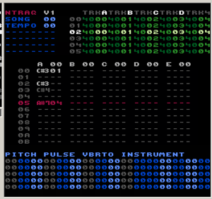

Introduction
I wrote my first music on the NES 20 years ago and have recently been amazed to discover that the "chip music" scene is still going strong. So, in a bid to do my bit to keep the history alive and because some of my music is either missing, mis-credited or in some cases never even saw the light of day, I decided I'd put together a little document of my work and experiences.
You'll need Flash to play the MP3s via the embedded audio players or you can download a ZIP file containing all the songs for each game. Alternatively you can download the .NSF file but you'll need a player to play these; personally I use Audio Overload but there's lots of others.
Keep checking back as I'll be adding more games in (roughly) chronological order along with an attempt to write something vaguely interesting about them.
If you want to get in touch, please do: neil@dutycyclegenerator.com
You can subscribe to the  feed to be informed of updates/changes.
feed to be informed of updates/changes.
I can also be found on twitter @  dutycyclegen
dutycyclegen
Magician (Eurocom/Taxan, 1990) |
|---|
This is where it all began. I was one of the founders of Eurocom (I'm still a Director there but that's a whole other story) and this was our first game together on the NES (or "Famicom" as we knew it: we brought the consoles back from Japan when we went out to visit our publisher, Taxan). We had no development hardware just half-a-dozen Famicom consoles and a badly photocopied hardware specification that was 99% written in Japanese! What we lacked in resources, we clearly made up for in boundless determination.
Luckily for us, our parent company (at the time) employed the skills of a really talented electronics engineer, Richard Alton, who managed to reverse engineer (and build) some flash-ROM cartridges and together with an old 6502 editor/assembler, "PDS", we had ourselves a rudimentary development kit!
I remember myself and Tim Rogers (now Technical Director at Eurocom) visiting the languages department at Sheffield University with the photocopied Japanese NES manual and with the help of two Japanese girls we deciphered a lot of the technical information. They're uncredited in the history of Eurocom but looking back, I'm not quite sure how we'd have progressed without their help!
I'd written my own music/audio drivers for the C64 and so, with the invaluable help of Tim Rogers, I set about trying to do the same for the NES. One thing I got to quickly realise was how utterly unsophisticated the NES was compared to the C64 and began to understand why most NES music sounded the way it did - you just couldn't do much else with it!
NES Audio Channels
And that was it! I was always baffled by the exclusion of an amplitude setting for the triangle-wave channel - it certainly would've made things slightly simpler when trying to balance the sounds.
I made quite a lot of use of the delta-modulation channel in 'Magician' though it was the only time I ever did. I can't actually remember why. I'd imagine that it was because the samples themselves would use up so much ROM space that it would be considered a luxury item.
So eventually we had a music driver. There were no tools to speak of so everything was entered as numbers in the assembler/editor. Later on I turned the numbers for command codes into macros to make entering and reading the sequences of notes a little easier but that's as sophisticated as it got. I worked out tunes on a little Yamaha keyboard and typed in the pitches and durations. Often I'd work out timings on some squared graph paper, mostly by trial and error.
Obviously I'm skipping over a lot of detail, otherwise I'd be here all week writing this.
Anyway, the music.
Looking back at this stuff it's difficult to remember what influenced me. I can still hear a lot of things inspired by Rob Hubbard and, to a lesser extent Martin Galway - inevitable really considering my C64 background. I was listening to Jean Michel Jarre and Tangerine Dream and a lot of other electronica/new age stuff. Surprising really that I'm actually a guitarist and only learned keyboard/piano/synth playing because I had to in order to transcribe stuff from my head to the NES. Having said that, many of the slow arpeggios that formed the basis of the backing to many of the tunes would've definitely been written initially on the guitar.
Track 1
Logically this would've been the first thing I ever wrote for the NES. Straight off the bat it's obvious I was influenced by Rob Hubbard with that lead sound that had the initial attack played an octave above the actual note. I remember I'd call this the "pluck" setting for the sound patch - again, clearly a side-effect of being a guitarist.
Track 3
Good one this. I employed the common trick of putting alternate note on two channels to give a nice echo/reverby sound. I also used a delayed exaggerated vibrato (heard in the last half of the loop) which gave it a eerie element. I can't actually remember what bit of the game it was for, I think it was the puzzle rooms.
Track 4
Probably one of my best tunes. I tended to just play around with sounds and then get inspired to arrange something. With this one I approached it, uncharacteristically, by writing a tune first. I also used the noise channel to add what was meant to be a cymbal crescendo but sounded more like synthesized wind! I came to use this (and other sound effects in my music) quite a lot.
Track 7
This was the title theme for Magician. Quite obviously influenced by Martin Galway with that slow-attack square-wave lead sound. Came in quite long this one. I spotted on a web site a while back that it was one of the top 10 longest pieces of music on the NES. One of few accolades.
Track 8
Discovered that you could make the delta-modulation snare sample sound a bit crisper by layering it with some white noise.
Track 10
I remember this one: the forest. Again, using sound effects in the music to try to convey some atmosphere. Has some nice fast-arpeggio chords later on. I read an interesting post on a forum recently where my music style had been labeled "euro style" (along with a bunch of other european game music composers) which was apparently typified by the use of the fast-arpeggio sound to simulate chords, following on from it's ubiquitous use in C64 music. Pretty accurate analysis and I did tend to use it quite a lot in all my NES music.
Track 11
Sounds to me like something Dave Brubeck might have done if he had a NES. How odd!
James Bond Jr (Eurocom/THQ 1991) |
|---|
I don't honestly remember much about this game apart from it being loosely based on the comic/cartoon of the same name.
I continued development of the music drivers, probably one of the key changes being me dropping the use of delta-mod samples. Instead I started using the old C64 trick of synthesizing drums sounds by rapidly stuffing numbers into the noise voice (and the triangle-wave voice).
Another old C64 trick I employed a lot in James Bond Jr (and continued to do so for almost all the other NES projects I worked on) was to simulate echo but just using a single voice. Instead of using two voices, one playing a melody and the second at a lower volume but slightly delayed, the single-voice method used slightly truncated note lengths and in the gaps in between notes, play the same notes shifted later in time, quickly dropping the voice volume (and then restoring it to play the next melody note).
OK, that's not the clearest explanation. Here's an illustration of the technique. I've laid it out in a kind-of "tracker" format for ease of illustration, though this is not how I actually put the music together (more on this in later projects).
A melody with a second voice for the echo might look like;
ChA ... ChB ...
C 4 V10 --- V05
--- --- --- ---
--- --- C 4 ---
--- --- --- ---
D 4 --- --- ---
--- --- --- ---
--- --- D 4 ---
--- --- --- ---
E 4 --- --- ---
--- --- --- ---
--- --- E 4 ---
--- --- --- ---
D 4 --- --- ---
--- --- --- ---
--- --- D 4 ---
--- --- --- ---
Whereas using the single channel trick, you'd do this;
ChA ...
C 4 V10
--- ---
C 4 V05
--- ---
D 4 V10
--- ---
D 4 V05
--- ---
E 4 V10
--- ---
E 4 V05
--- ---
D 4 V10
--- ---
D 4 V05
--- ---
So it gives you a similar effect to the two voice method but with the obvious benefit of not tying up the second voice. The results are very dependent on what you've got going on in the melody - the busier the better, it doesn't really work for long, held notes. It does work great for those trademark arpeggio-chords that me and my fellow euro-composers are so fond of :)
Anyway, the music.
Track 1
Something else that I dabbled with in this track (and a few others in this project) was trying to not only synthesize basic drums like kick, snare and hi-hats but also 808-sounding percussion/toms. It sounds a bit too busy in this particular track but I think it reasonably effective. Actually something that's just struck me about all of the tracks in this project is that they could all do with being slowed down ever-so-slightly, they sound a bit rushed. Problem was, I never had any sort of tempo control when typing/editing the music sequences and so it would've been a tedious job to go through and slightly alter all the note durations!
Track 4
Yet another old C64 trick in this one. Once the simple melody comes in (about 0:30), I filed the gaps in the melody with some short arpeggio chords. Rob Hubbard was the absolute master of this technique on the C64.
Track 6
Perfect example of the single-voice-echo technique from the start of this track.
Non-musical Interlude #1 |
|---|
You know those kind of jobs/projects/favours that you take on that seem like a good idea before you start them and in a short space of time you start regretting you ever even had the idea at all? Guess what I've been doing for the past several days? Yep, one of those jobs.
Since rediscovering the NES and digging back through my archives, I realised something and it really got under my skin. Of all the projects I worked on, two of them I no longer have the source data for. One of them, probably unsurprisingly, is 'Magician'. I'm probably getting ahead of myself here as there's another recent story, that I haven't yet told, of how-I-managed-to-get-my-audio-drivers-compiling-on-a-Mac-running-OSX (that's coming later, I promise), but because the only working, build-able version of the driver is from one of my last projects (again, coming later) and the fact that 'Magician' was written on the very first incarnation of the tools, it never really occurred to me that there'd ever be a chance of recreating the data. OK, if you want to be pedantic, of course, it is possible it's just beyond the realm of a reasonable task.
However, the second project that I no longer have the data for is 'Hero Quest' and as that was a much later project I thought there'd be a much greater chance of the music data still matching up with the build-able version of the driver I now have.
So I began thinking about how I'd be able to extract the music data from the .NSF file and put it into a build-able form. The simplest, and most obvious way, was to use a hex editor to find the sound, track and sequence data and put them into a source file using HEX statements. After some digging I managed to figure out where in the .NSF files all this stuff was and got it compiling. So far, so good. But it was just a big block of HEX numbers. Only a step up from having a binary file, really.
However, I then thought, 'if only I could pull out the addresses of each sound patch (explanations will come in later entries) and track and each sequence and and and....'. That's when the pain started.
Pulling out the sound patch data was pretty straightforward as each one is a fixed number of bytes (16, if you're asking). However, the tracks and sequences are variable lengths (of course!) and so a more difficult prospect. I actually went through the track data, byte-by-byte, and translated the bytes into commands macros (based on what I know the music driver would be expecting from the data) and it actually was pretty simple and quick to do. Then I started to do the sequence data in the same way. I managed about 12 of the 100+ sequences (in Hero Quest) and, to be frank, I lost the will to live. There had to be a better way!
I had to leave it alone for a few days as I'd got to thinking about how I could possibly write a program/script to achieve the task in a lot less time. I couldn't actually believe I was going to try to write a program to convert my own data back into a form that would be acceptable by an assembler but there seemed to be no other option. I'd started now so I had to finish.
After some wrangling to deal with the fact that Applescript (I chose that only because I'm reasonably competent with it) doesn't have any bitwise operations and there's a lot of bitwise number manipulation in the driver to pack stuff into as few bytes as possible, I managed to write a script that converted a binary dump of the sequence data into compile-able code. A bit of testing later and I was confident that it was working correctly.
So I now had a compile-able version of Hero Quest - wooooo! However, there was something just not quite right about the sound. More debugging necessary. Great. The sound patch data still remained as a bunch of 16 HEX values and while some of it made numerical sense, I knew that I wouldn't be happy until I'd decompiled the 16 bytes into the required macros commands so that I could figure out whether there was a discrepancy between the driver and the Hero Quest data. So, back to Applescript and a day later I figured out a script to decompile the sound patches. Not without an awful amount of frustration - trying to decipher all the bitwise manipulation of some of the data just about gave me a nosebleed.
For example, there are two bytes that define whether or not an offset is applied to the note pitch for a certain amount of frames at the beginning of a note (called 'gate' setting in my sound patches). In these two bytes, 5 different modes and 3 parameters are represented. Mode 1 is 'absolute mode'. Mode 2 is 'relative mode'. Mode 3 is 'noise gate' (uses voice D to play 1 frame of noise at the start of each note). Mode 4 is 'relative with duty' mode. Mode 5 is 'absolute with duty'.The first parameter is the pitch offset. The second parameter is the number of frames to apply the offset. The third parameter is the duty (where required). Absolute modes means the offset value is an absolute note index whereas the relative mode adds (or subtracts) the offset from the current note (so you can do octaves etc.). The two 'duty' modes, as well as affecting the pitch of the note, for voices A & B, lets you overwrite the current duty setting for the duration of the note offset. As you can see, packing all that information into 2 bytes takes a lot of manipulation. Deciphering and unpacking it all, nearly 20 years later, caused an awful lot of cussing and chin scratching!
(Blimey, I didn't mean to delve so deep into the architecture of the driver just yet. More on that later).
So, as you can see, I bit off a bit more than I could manage but I persevered and I now have a (fingers crossed) 100% faithful, compile-able version of Hero Quest!
Back to music for the next post, I promise :)
Neil
Lethal Weapon 3 (Eurocom/Ocean, 1992) |
|---|

I never expected so many people would be that interested in me rambling on about all this stuff but based on the attention from a few websites and all the emails, it seems you are! I really and truly appreciate all the kind words and I'm deeply flattered that so many of you think I made a positive contribution to NES audio. A few people have asked why I only did so few game titles and the answer is fairly simple. Back then I wasn't just writing game audio 24/7. Because Eurocom was in it's infancy it meant rolling up my sleeves and getting involved in all sorts of different stuff; game design, programming, level design, debugging, testing etc. In reality, over the course of a project, the amount of time actually spent coding music and SFX was quite small. Plus, obviously, I was working exclusively for Eurocom and Eurocom only did a handful of of NES games.
*cough* plusiwasneverthefastestworkerintheworld *cough* ;)
Anyway, to repeat what I've recently posted over on 2A03.org and The Shizz, in an attempt to keep all the information in one place and to save me from having to post the same answers in several different places, it's my intention to answer people's questions directly here. I'd like to attribute the questions to the people that ask them but if you'd rather remain anonymous, for whatever reason, just let me know. Otherwise assume that anything you send me via email or ask on another website might become part of the content on here.
Q&A will start next time, meanwhile here's the next music installment...
Lethal Weapon 3. Sometime around 1992, Eurocom was in trouble. We had no money (actually, make that negative money) and the relationship with the publisher of what would've been our third proper NES title deteriorated to the point that the game was never released (more on this in future updates). We couldn't afford to really pay ourselves and Lethal Weapon 3 was one of those projects that came along that we had to do just to pay the bills. This didn't go unnoticed. To quote Wikipedia:
'It is considered by many to be extremely difficult and frustrating in the fact that punching an enemy is more effective than shooting an enemy. It has minimal music and sparse interesting scenery.'
Sounds about right :S
In an attempt to balance the karma, I just bought the (actually rather good) OST by Michael Kamen (plus Clapton, Sting and David Sandborn) from Amazon for £1.58. I mention it only because the couple of NES tracks of any real merit took ideas from the film soundtrack. I'll come back to that in a minute.
Anyway, the music.
Track 1
This was the title track and I actually quite like it because I tried to do something a little bit different. As well as the usual drum track using voice C & D, I tried to program a syncopated tom tom bit using voice B (comes in around the minute mark). I think it was actually quite effective. The only downside, obviously, is the loss of one of your melody voices. Can't win 'em all.
Tracks 3, 4, 5, 6 & 7
These were all the in-game tracks and there's a reason they sounds a little simple and sparse - they only use voices B, C & D. I deliberately didn't program any audio data for voice A on the tracks that were used in-game. This was because most of the time your character was kicking, punching or shooting something and while the SFX driver was programmed to steal voices from the music only when needed, in this instance the interruptions were so frequent it made a mess of the music. So I made the decision to sacrifice a voice and simplify the music. Having said that, I was quite pleased with how track 6 came out. As I've just been listening to it I thought that the sweeping noise was done with some clever trick but it literally was just 16th notes descending in pitch. Sometimes the simplest things work best.
Track 8
I really liked how this came out at the time and a few of you have emailed to say the same. Actually, to quote Chibi-Tech in a post on 2A03.org, 'The guitarwank programming is just soooo smooth'. I'll take that as a compliment :) You'll have to forgive my hazy memory (once again): I know I borrowed some/part of the melody from one of the tracks from the Lethal Weapon 3 OST (I think it was the track 'Riggs and Rog'. I'll know for sure once my copy of the soundtrack arrives from Amazon. There were a couple of instrumental pieces on there that played with the themes from the Clapton/Sting song on the soundtrack "It's Probably Me". However I'm pretty sure it never had the guitarwank faked harmonics in the original. That was my idea and I'm sure Clapton wouldn't have approved. :)
Here's a bit of audio driver trivia for you. If you listen carefully to some of the longer notes with vibrato you can sometimes hear a little bit of cyclic clicking. This was a side-effect of the way I programmed the vibrato. On the APU, writing to the register that has the upper 3 bits of the frequency setting causes an audible click. This is because if you are using the hardware envelopes/timers, it's this register you write to to initialise the envelope/timer (I actually don't use the hardware envelopes or timers).This is not so bad at the start of a note where it's hardly noticed but because the APU is being written to every frame in my audio driver, I would only write this register when absolutely necessary. Therefore, because the vibrato programming is making small cyclic adjustments to the lower 8 bits of the frequency setting, most of the time it's not necessary to write the upper 3 bits. However, if when you add a value to the lower 8 bits it causes an overflow and therefore a requirement to increment/decrement the upper 3 bits, it meant that the upper 3 bits register had to be written, causing a cyclic click in the voice output. Normally I'd get around it by transposing the whole track up/down a semi-tone or two until I was lucky enough not to have any long notes that exhibited this side-effect. I didn't always spot them, as you can now hear. If you listen closely.
Nijuu |
|---|
OK, I was hoping to keep the wraps on this for a little bit longer but it's consumed so much of my spare time recently that I've not had time to do the Q&A stuff I promised and I've not spent much time answering emails or preparing the next music installment.
So what's been taking up my time? Read on!
In between all the music updates I've been getting reacquainted with my NES music driver. It was my intention to document it all, the techniques I used, how I achieved them and details of how to create music with it. Ultimately I'd like to release the original code to the community. I still may do this. Anyway, I've documented the original music driver now but along the way I realised how much of it was compromised. When creating a music driver for a system such as the NES, you had to be very mindful of ROM/RAM usage and also the amount of CPU time needed per frame to process the data. And this is how my old music driver stood when I last used it all those years ago. Looking at MML/PPMCK etc. it was interesting to see the approach and how it differed and at the same time was very similar to the way I worked. But that got me thinking. If ROM/RAM/CPU resources were of major concern to a driver that was used in a game, outside of a game those restrictions need not be so strictly adhered to.
I figured I could take the best bits of my old sound driver, improve the stuff that didn't work properly, throw in some of the flexibility from MML/PPMCK and make my ultimate NES audio driver. So over the last few weeks I've actually written a brand new NES driver, from scratch, which I've nicknamed 'Nijuu'.
It's my intention to document it all and try to get it into a shape that is usable by other people - then release it to the community to do with what you will. If anyone is actually interested in using it I'll try to help you get started and will provide help if you need it. Plus if you've any interesting ideas I might even find the time to incorporate them or change Nijuu. I'll put together some more detail soon. I've got it working to an already usable state (though I've got a little way to go yet before I'd be happy releasing it) so I just wanted to let you all know the news.
Bonus points if you can figure out why I chose the name :)
Nijuu : Portamental! |
|---|
A whole day. A WHOLE day. That's how long I've just spent trying to implement a proper portamento into Nijuu.
I had a pitch-bend function in my old drivers but it was clumsy and most of the calculations were done in macros. For Nijuu I wanted portamento like it should be done. You just turn it on on a track and specify the number of frames over which the pitch sweep should occur and then just continue entering notes into the sequence like normal. All your notes will be smoothly pitch-swept from one to the other, forever, until you turn Portamento off again. It also only works in Legato mode, kind of like old mono synths where if you play without overlapping the notes, the portamento has no effect.
I'd implemented it pretty quickly but the debugging (when it wasn't working quite right) was a real slog. I had to resort to pen and paper and a calculator to figure out where the errors were in the fractional calculations.
You can get some amazing effects with very little effort, I've just had a ton of fun messing about with it. One of them I was setting the portamento time to be slightly smaller than the note durations so that by the time the pitch had reached the next note it was time to start sweeping again. Playing notes with varied intervals It sounded like a Clanger playing a kazoo.
My partner now knows more about portamento than she probably ever cared to.
I learned today that math coding in assembly language is quite an art form.
In other news, my good friend Frank Cifaldi sent me a NES ROM of a build of Hero Quest. I'd never seen the game before so it was quite weird hearing the music in context. I have to say I don't think it particularly suited the game. Actually, I think that's a recurring theme in most of my NES music, hearing them today. I think I just tried to make cool sounding audio without paying much attention to how well it fitted (or didn't) to the game it was going into. Don't get me wrong, I think Hero Quest is probably some of the best NES music I did, but in context I think it was seriously self indulgent. :D
Anyway, back to the music for the next update. Oh yeah, the Q&A stuff too. I haven't forgotten, just been preoccupied with Nijuu.
Oh, last thing: yes, almost everyone that emailed got the answer right to my question about the origins of the name "Nijuu". It's Japanese for "twenty" and it was 20 years ago that I first dipped my toe into NES audio.
Take it easy.
It's Alive! |
|---|
A little Nijuu teaser to show I'm making progress while not updating the site.
I'd done quite a heavy testing and debugging session and didn't actually mean to write any "music" but the test patterns I was playing with suggested something and I got a bit carried away. It's a bit of nonesense really but it shows off quite a few features of Nijuu, including portamento, modifying instrument parameters on the fly, echo effects (all done via my new echo effect command, nothing is manually entered like in the old days), gated amplitude (via user-definable patterns), new drums and four square-wave voices. Yes, four ;)
Still no DPCM though, yet, just the 4 basic channels.
You'll have to make do with just the MP3 for the time being. I want to do some more testing and tweaking before I put out a NSF file. The MP3 file was output from Game Music Box.
Let me know what you think.
Definitely a proper music update coming next.
Ferrari Grand Prix Challenge (System 3, 1992) |
|---|

First off, sincere apologies. I've been pretty busy recently and the spare time I have had I've been trying to put together a manual for Nijuu. It's shaping up pretty well and hopefully I'll soon be able to put together a releasable package. I only realised tonight that it's been quite a long time since a proper music entry on the website. So, here we are.
Some Eurocom history is required to put this game into context. As I mentioned before, after James Bond Jnr we basically ran out of money and we struggled to find a publisher that was interested in giving us work. As the money ran out, we could no longer afford to pay ourselves a full-time wage so things were getting a little crazy. It was around this time, due to personal circumstances, we parted ways with Chris Shrigley. He was recently married with a baby and a mortgage to pay and simply couldn't afford to stick it out at Eurocom so he sought his fortune elsewhere. A sad day, but under the circumstances it was a tough decision to make. (As a lot of you already know, I collaborated later on a project with Chris but more on that in future updates).
In order to keep our heads above water, a few of us touted around for freelance work. I was in quite an ideal position as I had a (small) track record, my own music engine (well, Eurocom's technically but I had their blessing to make use of it) and the fact that there weren't that many freelance musicians that could do NES sound. And I was cheap.
I think through a contact of Mat Sneap's (Eurocom Art Director), I got asked to do the music and SFX for "a grand prix game" by old school publisher/developer, System 3. That's about as much as I really knew about the project and I'm embarrassed to say I'd never even seen the game at all until very recently.
They'd asked for some rock-style tracks which I thought was a tall order on the NES but I think a couple of the tracks turned out pretty good, if a little short. I also didn't get paid a great deal for the project so I was determined to turn it around in as short a time as possible. (Norrin - I think you know what I'm setting the scene for :)
One eagle-eyed NES fan spotted that one of the Ferrari Grand Prix tunes is the same as a tune from James Bond Jnr. OK, fine, it's the same. Exactly the same. What can I say? I was stuck for a tune, I was up against time and I wasn't getting paid much. What would you do?
Besides which, it was a good tune. :)
Oh before I forget, big thanks to Sean W (B00daW) for organising an IRC Q&A session over on #nesdev. I had tons of fun and met some top people. You can read an edited version of the session over on True Chip Till Death
And also big thanks to Loopy (author of ASM6, the 6502 assembler that I've been using to code Nijuu). He was kind enough to take on my comments about changing a few functions of ASM6 and I can't wait to get my hands on the updated version as I'm waiting to start optimising Nijuu.
Anyway, the music.
Track 1 - Title Music
One of my favourites of all my NES tunes. I still love the breakdown in the middle even today. I'm going to record a version of this with proper instruments one day.
Track 2
Obscure reference : I remember trying to figure a way to do flute-type effects as I listened to Ozric Tentacles' "Strangitude" and "Sploosh" a lot during this time. The wobbly effect on voice B was my attempt to mimic some of that weird flute stuff that they were fond of.
Track 9
Yes, this is the track that I lifted from James Bond Jnr. :)
Quick Q&A
'You mentioned that Magician was the only one of your works to use samples. Do you recall the source of those sounds? Were they something like 8-bit drum machine sounds initially, or something else altogether? I've been wondering if composers had like a library of samples on their Amiga or whatever and went from there...' - Bucky
I'm pretty sketchy about the source of those samples. I remember we ripped the samples out of Super Mario Bros 3 while hacking around with stuff so they could've come from there but I also remember having a sampling cartridge on the Atari ST, Replay Pro I think, so we might have recorded the drum sounds from the Yamaha PSR keyboard that I used to work out tunes on. If Nintendo are reading, I definitely recorded them from the Yamaha keyboard. Absolutely sure of it... :)
'My big question is what kind of software you eventually fell into using, and if it resembled a tracker of any sort?' - Dennis
Hi Dennis. All of my music was entered in text files and compiled with our own in-house 6502 assembler. I'd messed around with tracker-style programs on the Amiga but it's not a format that I ever really got on with. I did write some simple MIDI-to-text utility later on but it's use was very limited so 90% of the time I just typed everything in.
'One quick question I have: I have always assumed that you wrote the music for Ferrari Grand Prix Challenge, because track 9 on the NSF is the same song (well slightly different) as track 3 from the James Bond Jr NSF. Is that a safe assumption?' - Norrin
That assumption is now confirmed :)
(regarding my method of writing/editing NES music) 'Since I don't know much of anything about programming I don't really know what that would look like visually, but possibly something closer to MML?' - Bucky
Hi Bucky. Yes, my old method of working shares a lot in common with how you would put a MML file together. There are several architectural differences in my sound engine compared to PPMCK etc. though. I've stuck with my old method of entering music for Nijuu too - old habits die hard :)
That's it for this time. I know it's brief but I really do need to get back to Nijuu.
Take it easy.
Jungle Book (Eurocom/Virgin Interactive, 1994) |
|---|

We're coming towards the end of my NES music 'nesography' and I had a decision to make as to which game to do next. I'll explain. By the end of 1992, Eurocom had expanded and diversified and we started working on Gameboy, Master System, PC & 3D0. We were approached by Virgin Interactive who had a Jungle Book game in development on Genesis/Megadrive but things weren't going well and they were looking for an external team to take over the project and get it finished. Not having much to lose and because we saw it as a good opportunity to springboard onto the then new 16-bit platforms (Genesis/Megadrive and SNES - although we didn't actually do the SNES version of this game) we jumped in with both feet. On the back of successfully finishing the project we had a 16-bit feather in our caps and were able to expand the company and move forward. It was a turning point for Eurocom - a real make-or-break moment.
I didn't get to do the audio for the Genesis/Megadrive version because it had already been done. However, we were also asked by Virgin if we could produce 8-bit versions of the game too so out came the NES and Gameboy tools again.
Actually, that reminds me - Gameboy. I recently read about the .GBS file format and then was disappointed to find that none of the Gameboy projects I worked on seem to be available, as GBS files. If anyone has them or the ability to rip the music please email me. I'm looking for "Lethal Weapon 3", "Rodland" and "Jungle Book".
Sorry, back to the story. As I said, I had a decision to make about which game to list next. Though Jungle Book was the very last NES game I wrote music for, there are two more projects I did before then that didn't get released (one of which most of you know about, the other nobody does). So, instead of following on chronologically, I decided that I'd get Jungle Book out of the way first, leaving the two unreleased games to finish out the list.
So here we are: Jungle Book. Let me tell you, I had a massive amount of fun doing this game. It was the first time I'd actually transcribed (if that's the correct term) anyone else's music and what better tunes than the fabulous songs of the Sherman Brothers (and Terry Gilkyson of course). Looking back I'm sure we ever discussed the legalities of copying several of the tunes/songs from the film but how could you not? I wished I'd had more time to work on the game as transcribing the songs took a long time but also gave me a lot of material I could've worked into more tunes. I did get to do a lazy reggae-style Bare Necessities though so not all was lost :)
Anyway, the music.
Track 1
"The Bare Necessities", brilliant, brilliant song. The original version wasn't bad either. :)
I put a huge amount of effort into the arpeggio chords for this song. I wanted to mimic strumming somehow so I could capture that ragtime banjo sound of the original track. If you think about how you strum chords, you've got upwards and downwards strumming and so I had the idea of not only working out the arpeggios to match the chords but to have upwards and downwards versions of them by reversing the order for the upstroke versions and also backing off the Attack amplitude. As you can imagine, putting together the subsequent sequence data was a nightmare! :)
I think it turned out really well and it's one of those things that you don't really notice until you hear the version with just straight arpeggios.
Track 2
Another song from the film, "Colonel Hathi's March".
Track 3
And another. This was taken from the opening credits music, I'm not sure of the title as it doesn't seem to appear on any OST album that I've seen.
Track 4
I got the idea for this one from the film but for the life of me I can't remember where.
Track 5
Bare Necessities in a laid-back reggae style :)
Track 9
"I Wanna Be Like You". Iconic song from the film performed by the late, great Louis Prima who was also the voice of King Louie in the film. In the game, the tune was used for the fight with King Louie but preceding that you had to make your way up the incredibly hard falling platforms. We used a loop of the backing (Track 7) to play during the progression to the top of the level and triggered the full song at the top where you meet Louie.
Bonus Update! |
|---|
In a discussion over on NesDev, I mentioned that I'd written a (synth) drum editor that runs on the NES (well, Nestopia). I don't know how much use it will be to anyone but I thought I'd share it with you. There's also source code for the utility that I use to convert the binary tables to text so that the drums can be compile in Nijuu. It should be easy enough to alter this to convert the binary to, say, MML, depending on how you do drums in MML, I'm not actually sure. Anyway, you can still have some (limited) fun just playing around with the editor, even if you don't use the data.
I just wanted a way to play drum sounds live on the NES (Nestopia) as it's better to be able to tweak values and hear them immediately rather than edit a table and compile the song every time you make a change to the drum sounds. The editor uses SRAM (Nestopia battery file "drumedit.sav". Depending on platform and options, the .sav file might actually be a zip file (see my recent post on NesDev). The util to convert the binary SRAM data to text won't work if this is the case so you'll have to unzip the .SAV file first.
Nijuu Drum Editor
There are two drum sounds, DRUM0 and DRUM1 (just a limitation of the editor, you can have as many as you like inside Nijuu). The screen is split into two tables, the top one is for DRUM0 and the bottom for DRUM1. Going across the tables you have 3 values for Voice A "VA", 3 values for Voice B "VB", only one value for Voice C "VC" and two values for Voice D "VD". Each drum sound lasts for 8 frames, each row of the table represents a frame and goes from top to bottom. At the bottom of the screen is a box that shows you what is currently in the copy buffer and also a message to remind you that you can access the (basic) help screen by pressing A on pad number 2.
In order to play the sounds, move around the tables and edit values, you need pad 1 and pad 2. I just setup Nestopia's keyboard input to map the buttons of both pads to something comfortable as several functions use more than one button at the same time.
A brief summary of the controls is always available by pressing A on pad 2. Otherwise see the included text file "controls.txt".
Have fun!
Nijuu Demo Track #2 |
|---|
As promised, another Nijuu demo track. Quite an unusual departure for me - a cover version of an 80s pop hit, Colonel Abram's "Trapped". It started when I was tweaking around with multi-voice instruments in Nijuu and I ended up making quite a smart little bass sound which, for some reason, reminded me of the song. So I programmed in the bass-line and the basic drum pattern and that became my test-bed for a while as I continued adding new features, doing some bug-fixing and crossing stuff off my to-do list.
I was just going to throw it away but as I was developing the MIDI-to-Nijuu utility (which works really great now) I thought it would be a good opportunity to test out what the work-flow is like in a real-world situation. Doing the vocal lines was such a piece of cake (using Cubase 4 LE on my Mac) with the MIDI-to-Nijuu that I decided to try to do the whole song.
It's not entirely accurate, mainly because I had to transpose it by 6 semi-tones due to the bass on the original song being too low for the NES to reproduce (Voice A & B). Then the vocal line sounded a bit too high pitched so I dropped that down to the octave below. There's also quite a bit of multi-part harmony in the female backing parts which I had to try and approximate with a variety of arpeggios. I also added a few little frills here and there (watch out for the "bell tree" sound which was created using another new Nijuu feature and one of the backing sounds gets sent through one of the programmable noise-gates that I showed off in the first Nijuu demo). I also went over-the-top with the echo stuff towards the end so you get an idea of the kind of sound you can get. You can also hear the newly programmed master fade-out effect at the end of the track - not sure if I'm entirely satisfied with it yet, that Voice C is such a pain in the arse to deal with! :)
Just a bit of fun until the next update.
Take it easy.
Dropzone (Eurocom/Mindscape/Archer Maclean, 1992) |
|---|
Glad you all enjoyed the little NES-ified slice of 80s house/funk and I was honored to be asked by Wizwars over at The Shizz to contribute the track (or a new one, time permitting) to a fund-raising compilation CD. Only too happy to help out a good cause, good luck with the CD.
Anyway, to tonight's update. I have to admit that this one was not on the schedule and took me quite by surprise when it popped up in conversation (over on The Shizz, again). I honestly thought that this game never actually made it onto the shop shelves and similarly it doesn't appear in the list of past titles on Eurocom's website. I can only imagine that it's due to an administrative error (there's a tiny part of my mind that is also hoping that's there's not an embarrassing/awkward story behind it's omission!).
Eurocom also did a SNES version of the same game. Dropzone was actually an Archer Maclean game that was originally on the C64 and we were good friends with him, hence him asking us to produce console versions. However, I remember the SNES one quite vividly and unfortunately not for good reasons. When we talked over the audio with Archer, he was quite insistent that he wanted the music to be an arrangement of "Mars" from Gustav Holst's "The Planets" which, while a little bombastic, fitted the game pretty well. Anyway, I really fancied the challenge of trying to arrange it on the SNES so I got the sheet music and a recording of the piece and put together a pretty faithful (albeit slimmed down and trimmed) version. However, due to what was described as "rights issues" (I'm having to be diplomatic, I believe the truth was a little different), we were told that we were no longer allowed to use the arrangement of "Mars". For reasons I can't remember, we were supplied with an alternative arrangement by the publisher, which only hinted at the original track and was honestly pretty awful. Not really having much choice or time, that is what ended up in the final game.
Weirdly, I had that happen a couple of times more, most annoyingly when I composed the soundtrack to "The World Is Not Enough" on the N64. At the last minute, clearance to use anything that resembled the Bond theme was retracted and so the music had to be altered to remove all traces of the famous and ubiquitous four-note phrase and is the reason why we didn't have the Bond Theme in the game at all.
Admittedly, this has very little to do with the NES version :) I actually quite like the NES music even though it's nothing more than playing around with arpeggios and comes in under a minute long before it loops. Strangely, and for reasons I can't actually fathom, the NSF that was kindly supplied to me by Bucky O' Hare over on The Shizz, has two versions of the same track, one slower and a slightly different pitch to the other one. Now the obvious reason would be that one version would be PAL and the other NTSC but I had a feature in the old audio engine to cope with PAL/NTSC differences without the need to have two different tracks. I'm only including them both here for completeness.
Anyway, the music. Actually, there's nothing much to say about it so in other news, I've been murdering a Famicom AV by applying inappropriate voltage to it. Hopefully it's not terminal :)
"Hero Quest" next time.
Take it easy.
(Edit: apologies on behalf of the spell-checker in Dreamweaver. It thought to replace "Shizz" with "Shnizz"... *shrugs*)
New Toys! |
|---|
As I've been spending so much time on the MacBook recently and then having installed Cubase on it to do the MIDI-to-Nijuu tool, it's been frustrating me not having an actual musical keyboard to record with. Up till now I've been using the rather handy "MidiKeys" to turn the MacBook keyboard into a virtual MIDI instrument. It works but, as you can imagine, it has it's limitations. I've got a full-sized keyboard down in the studio but it's far from portable and while I can obviously take the laptop to the mountain, it defeats the object of working on a laptop in the first place!
So I had a quick search around for a small-scale USB MIDI keyboard and stumbled across the Korg Nano range of controllers. While hardly being a "player's keyboard", the tiny size, velocity sensitive keys (!) and the fact that it's USB powered make it the perfect music entry tool (I deliberately refrain from using the work "keyboard"). There's also a drum-pad/touch-control unit (Nano Pad) and one with 9 rotary controls and 9 faders (Nano Control). All incredibly cute and surprisingly usable. I was in two minds at first and then this review sold me completely!
Available in white and the more stylish and cool black version. :)
Hopefully the embedded video will work. It's not something I've tried before. If not, here's a link to the video on YouTube.
Nee nee nee nee neeeeeeeee.....WOWWWWW! :)
Hero Quest (Gremlin Graphics, 1991 - not released) |
|---|

Well, here we are: the penultimate entry in my NES music career and strangely, in a way, the one that was probably indirectly responsible for this website's existence.
Someone tipped me off to the fact that the music was available on the internet in .NSF format and it was when searching for the file that I found a discussion over on The Shizz where people were compiling their personal Top Ten NES music. I was totally stunned to find that Hero Quest was mentioned several times - thank you! The most surprising aspect was the fact that as far as I knew, back when I wrote the music, the game never saw the light of day. However, I subsequently discovered that the game's author, Chris Shrigley, had released the game into the NES community.
As with Ferrari Grand Prix, this project was done while I was freelancing when Eurocom was going through a rather lean period and I owe it to Chris Shrigley for giving me the opportunity. I didn't know a lot about Hero Quest (apart from the fact that it was a board game) and, as I've mentioned before, I only recently saw (and played) the NES version.
In other news, Nijuu creeps slowly towards a releasable state. My Famicom is not dead after all so I'm dying to get my hands on my PowerPak now. And...I lost my entire (1500+ albums, 600+ GB of FLAC/MP3 files) music collection to hardware failure. Ouch! Guess what I'll be doing every night for the next few months....
Anyway, the music.
Track 1
This seemed to be everyone's favourite of the two main tunes but I actually preferred Track 2 (see Track 2 for reasons why). Two things of significance here: the time signature changes from 4/4 (in the intro) to 6/8 which was a first for me and the faked tempo modulation. I say faked because, well, because it was! I never had a tempo setting in the music driver (and funnily enough I don't have one in Nijuu - though I will do as I've figure out quite a cool way to do it) so the section where the song slows down at the end of the intro I had to do manually by gradually increasing the note lengths to give the impression of ritardando.
I think my favourite bit is the third section that uses the arpeggios that alternate between octaves. It's something I came up with in the project-that-nobody-knows-about to try to give a more orchestral feel and I just used the same trick for Hero Quest. I like the way it almost sounds layered, like the higher octave notes are on top of the lower ones. Makes it sound nice and rich though I understand that arpeggios are not liked by everyone :)
Track 2
One of my favourite little tricks is in this tune though I don't know if anyone even spotted it. Again, a switch of time signatures for the second section, going from 4/4 to 6/8 but this time I kept the 4/4 backing phrase going while the rest of the tracks switched to 6/8, causing the backing to shift against the other parts (listen from about 1:48) until eventually I switch the backing to a 6/8 version to pull it back in time with the other tracks (about 2:10 when the arpeggio chords come in).
Another weird thing about this track is that it doesn't loop. I got myself into a bit of trouble with the second part which I just couldn't figure out how to pull it back around to loop with the beginning section. There was nothing else to do but go for a power ending :)
Track 5
From comments I've had, this also seemed to be a popular one. I have to agree, I really like this track. I'd worked out the ballad-y tune and as I was tweaking sounds and adding a bit of interest to the tracks, I though it was missing some really big power-ballad-style drums. Not one to shy away from a challenge, I programmed a really big kick and snare sound (the kick was 7 frames long on the triangle channel!). Still a really good sound even today. I also had a bizarre idea of doing some reverse drum sounds which you can hear in the intro. Literally I just copied the snare sound and reversed the order of the channel settings. Bizarrely it worked though obviously you had to trigger the reverse sound slightly before the beat to get the timing right. I also love the bass sweep at the end of the intro. If you were paying attention, I gave a little nod to this in the first Nijuu demo :)
Next time, the NES-project-that-nobody-knew-about!
Until then, take it easy.
Erik The Viking (1992, unreleased) |
|---|

Apart from a show-reel ROM I did around 1992 which, sadly, I don't think I'll ever see again, we've arrived at the final piece of my NES music puzzle: an unreleased Eurocom game based on the Terry Jone's book/film, "Erik The Viking".
It felt wrong not having a picture to accompany this entry so I grabbed a few from the internet. I picked the book cover just because I thought it was a much cooler image than the film poster.
In what seems a persistent admission on here, quite how we ended up making a game from this rather obscure film is yet another detail that escapes my memory. However, being loosely based on Norse mythology, the core of the story was rich with ideas for a game and we'd turned it into a Zelda-style RPG - not to be confused with the earlier text adventure from Foundation 9.
We were producing the game for the now-defunct Japanese publisher, Video Systems and had pretty much completed the whole game. However, geographical and language problems made the testing and bug-finding phase frustratingly difficult. We were almost solely reliant on the publisher finding bugs/issues simply because there was only 4 of us trying to deliver this fairly large and complicated game and as we didn't speak Japanese and they didn't speak much English, it made for an interesting process. Even I had to get involved in map building and putting together trigger/behaviour scripts for the game's events as well as writing all the music. It was all good fun though and the last version of the game that we submitted to the publisher was in great shape and actually good fun to play!
However, things ground to a halt as the shared frustration of trying to communicate bugs and issues led to a breakdown of the relationship with the publisher and we parted ways with the game destined for the scrap-heap. Sad, really, as neither party actually did anything wrong and both sides were enthusiastic about the game until the end. I remember a particularly funny communication from them right at the end that simply said "There are bugs. Please fix them." :) I don't know if Terry Jones even got to see the game, which quite is an odd arrangement (English game developer making a game of an English writer's book via a Japanese publisher...). Somewhere in the world I'm sure it must still exist on a NES dev-cart but apart from that it's "gone the way of the dodo".
Luckily for you lot, I still had the music binary files and, with a little manual hex editing, managed to fashion it into a NSF file so even if you can't see the game, you can listen to the music. I am far too good to you all :)
Anyway, the music.
Track 1, "To The Death"
Bucking one of my own apparent trends, for some reason I'd actually named all the tracks in the source code and while a few of them made me cringe a little, I thought I'd include the names as it adds a little insight into the process.
I love the arpeggios in this track. As I mentioned in Hero Quest, I'd been experimenting with heavy arpeggio use to make more of a symphonic sound. Combined with a repeating metallic noise pattern I think it gives this track a pretty unique tone. As the name suggests, this track was used in the (very frequent) battle scenes.
Track 2, "Peace In The Harbor"
The idea of using sound effects in a musical context seems to be something I kept revisiting regularly and here it is again in this track. This has to be a musical first - the sound of seagulls in a song. Aside from this, I pulled quite a nice trick with the lead sound, repeating the pitch bend sound over 3 octaves which gave it quite an ethereal tone. I've no idea where I got the idea from though :) Later in the track I tried to use a 25% duty sound to sound like an oboe which I thought was pretty successful.
Track 3, "Spirit Of Adventure
See, I can do stuff without resorting to arpeggios! This was the general main tune that was used when Erik and the Vikings were tramping around the villages. I made a lot of effort to make a tune that didn't quickly become annoying as this tune was used quite a lot in the game. It's a lot harder than you might imagine.
Track 4, "New Dawn (Erik The Viking Theme)"
This has nothing to do with the film itself, I think I was just being a bit self-indulgent :) OK here's an admission. I once saw a documentary about the work of old film composers, the likes of Bernstein, Bernard Herrmann etc. I'm pretty sure it was Bernard Herrmann who said that a common trick he used when coming up with themes for his scores was to use the meter of the words in the title of the film. This idea stuck with me for years and I always wanted to have a go. This track was my attempt do that. If you listen to the melody - da da da daaaaa daaaaa - it follows the meter of E-rik the Vi-king. Strange but true.
Track 5, "Days Of Ocean Blue
Sound of the sea again. This tune was used when the Vikings first set sail from their homeland.
Track 6, "Labyrinth"
Another track done in a similar "orchestral" style to the first track.
Track 7, 14 and 15
The inevitable fanfares and jingles.
Track 8, "Village Life"
Another general adventuring tune and once more not a fast arpeggio in sight!
Track 9, "Caves"
One of my favourite NES tracks. I started off trying to capture the sparseness of the themes used in Mario (3) for the levels inside castles/caves but then added my own twists using arpeggio swells and the noise channel to make a triangle-esque percussive sound. Unusually this track also has two bass lines. At the same time!
Track 10, "Dragon Dance"
Quirky little track, the reason for the title totally escapes me.
Track 11, "Consequences"
Pretty much stolen from Track 2 of Ferrari Grand Prix but slowed down to half speed and removing the drums seemed to give it a totally different feeling.
Track 12, "Land Of Sorrow"
In the game there's a pretty catastrophic event that you unwittingly commit that plunges a once peaceful land into tragedy. This was the idea I had for the music to accompany that section, though it's not finished. It's actually a minor-key version of Track 3.
Track 13, "Giant's Harp (Peace Restored)
And subsequently you make amends for the bad deed and restore peace and joy to the land. Quite what it has to do with a Giant's Harp I can't remember. This is a major-key version of the minor-key version of Track 3.
Well, that concludes the historical rambling. It's been nostalgic and cathartic in equal measures for me. Hopefully you'll have found it interesting, informative or even inspiring.
I wanted to wrap up all the historic stuff before getting to a point where I release Nijuu. So that's what's coming next from me and the website.
It's my intention to release Nijuu to a select few first-of-all, if only to iron out any obvious issues, before making it publically available. I'm looking for people who can put it through it's paces on a musical and technical level (including the documentation) so that any major bugs can be ironed out. So, if you'd like to be considered for a pre-release version, email me. Please don't be offended though if I don't include you - the full version will be available to everyone soon, I promise.
Is There An Echo In Here? |
|---|
Here...here...h....
In a discussion over on NesDev, I was describing how I'd implemented a way of producing single-voice echo without the need for complicated manual programming/note sequences.
As anyone who's tried programming single-voice echo in MML etc. will attest to, it's an arduous task and, unless you're extremely fastidious, not easy to get any more complicated or richer result than simply repeating a note with a lower volume in between two adjacent notes.
In my day, I did once attempt to manually program some echo where the echo sound would be played in between the second and third subsequent notes but it was a complicated job and with anything but a simple rhythm, was just far too much effort.
While sketching out a few ideas on paper when thinking about writing Nijuu, I puzzled over how you could do it within the audio engine itself so that the feature would be available to the composer with minimum effort, maximum results. Many scribbled-out notes later I thought "Could I somehow mimic how a traditional audio echo effort worked?". In simple terms, an audio echo effect would sample/capture an audio signal, attenuate the amplitude and then feed back the processed signal back in the mix with a delay. But how to simulate this on the NES where a) you cannot capture the audio output of a voice and b) you have no audio signal path into which to feed the processed echo. And for a while I'd put it in the "Big Ideas" file. "Big Ideas" being a euphemism for "It's Never Going To Happen"...
I carried on working on Nijuu and on the back of solving another problem (minimising the amount of register writes per refresh) I'd implemented a "virtual APU" that was a mirror of the APU registers in RAM. During the refresh cycle I could write/read/manipulate these virtual registers and only at the end of the refresh cycle did any of the values ever get written to the APU. Because of this I realised that I had a tap into the "audio path" and it was then I realised how to program single-voice echo into the audio engine.
How it works is to have a circular buffer (one each for voices A, B & D) that the echo writes to by figuring out what is going to get written to the APU registers each frame. It then captures the register settings and continues to do so until the buffer is filled, then starts again at the beginning. When you enable echo, Nijuu retrieves the values from the buffer and writes them to the APU registers in the "gaps" in between notes when it decides that there's no activity on the voice (I do this by detecting if the ADSR envelope on the voice has reached the Release phase or if there is no note playing). The echo feedback continues to loop around, attenuating the captured amplitude until it reaches zero. All the while, any new notes are captured to the echo buffer in the same way and it continues to catpure/attenuate/feedback notes forever until you turn it off.
It's a simple bit of programming but I have to say I'm really proud of it. Of course, it's a bit RAM-hungry but more than makes up for it in it's ease of use and richness of the effects you can achieve.
So, Nijuu single-voice echo is enabled by one short command. There are a few parameters; speed, which is the delay in frames between each echo repeat; initial attenuation, which is how much the original amplitude is initally attentuated before the echo effect starts to feed the signal back into the voice; per-cycle attenuattion, which is how much is subtracted from the echo amplitude for each cycle of the echo buffer (i.e. the speed at which the echo signal reaches zero amplitude). The last parameter is something I recently added. It allows you (in the case of voice A & B) to specify an overwrite value for the voice duty. This allows you to affect the tonal quality of the echo feedback. By default, the echo duty is captured from the original notes but by specifying, say, a duty of $00, you can make the echo signal sound "thinner" then the original (similar to a "high pass" filter) or you could specify a duty of $80 which gives a "softer" echo sound (in a way, a bit like a "low pass" filter).
Anyway, I said on NesDev that I'd had a little demo to show off the effect, so here it is. The demo repeats a well-known melody two times before modifying the echo parameters. It starts of with no echo and then gradually increases the delay size and modifes the feedback to show you the wide range of effects that you can easily achieve. I added pitch-bend and arpeggios to add bits of the melody that you can pick out easier in the echo signal. The transposing is just so that you can hear nuances of the effect that are more/less apparent depending on your playback system (or hearing!). The second half of the demo I just applied a severe downward pitch sweep to the instrument. Again, this is just done to highlight artefeacts of the echo effect that are sometimes not apparent with a predictable melody.
NES Music Is Rotted One Note? |
|---|
I've been playing around adding some (pseudo) random features to Nijuu.
There are already several commands that enable you to modify instrument parameters from within the sequence data but I wanted to expand that to give you the ability to modify other play-back parameters. This led to me adding commands that specify the RAM address of internal Nijuu variables so that they were exposed to real-time manipulation. This in turn led me to see if I could figure out a reasonable way to feed random numbers to these parameters and then expand that by giving the random numbers a range (minimum/maximum value) to make them more "useful".
I use inverted commas around "useful" as that description is still pretty debatable.
Anyway, I was using a few simple sequences while testing the feature and thought you might find it interesting. On the two square channels is one single note (C4) that is repeated 128 times with a loop. For each repeat, a random offset is added to the note (with a range of 3 octaves). The note velocity is set to a random value (between 2 and 12). The duration is randomised (between 8 frames and 32 frames) and then a random length rest is played after the note. Oh, automatic pitch-bend is turned on so Nijuu attempts to sweep the pitch between every random note. All this is fed through the automatic single-voice echo. I left the feedback rate of the echo at a fixed value in an attempt to try to anchor the timing of the notes. The second square channel plays exactly the same sequence but has it's pitch slightly detuned. They start off at exactly the same point but gradually get further and further distinct from each other.
For the hell of it, I made a random bass-line with the triangle channel. Just one note, 64 frames long that repeats and changes to a random note (within the lowest octave). I enabled automatic pitch-bend on that too.
On the noise channel you can (just about) hear it going through the echo effect. Once again I programmed a one-note, 128-itteration loop that changes the pitch each time but I kept the duration of the notes fixed, instead I set the pitch sweep effect and fed a random value to the sweep offset. After the 128 iterrations, there's a long rest to allow the sound of the echo to be heard (though it's not always obvious).
Then there's a basic drum pattern to give it all a sense of rhythm :)
It's pretty unlistenable, mostly, but there are some interesting accidents littered throughout. Not sure where I'm taking this (I could feed random numbers to the instrument parameters too) but I thought I'd share it.
In other Nijuu news, I've now got a few beta testers and initial feedback seems promising (though my "to do" list has now expanded a little).
Edit: spotted a bug in the echo code that I'd recently introduced which caused corruption of square A's echo data if there were other voices with echo enabled. I fixed it and re-ouput the Random track which is slightly different. I've included the "proper" one as "Random2".
Overdue Update |
|---|
Hello!
Sorry it's been a while but I've been super busy of late: too may fingers in too many pies, if I'm honest with you.
Some news, headline-style...
My NES cover of Colonel Abrams' "Trapped" on The Shizz compilation. Thanks again to Jason of Concatenation Records for asking me to contribute a track.
I'm working on a native NES tracker. More details on this soon.
I recently did an interview for Original Sound Version website.
I'm finally making the push to get Nijuu out, expect more new on this in the next week or so.
And finally, while tidying up Nijuu I remembered this idea I was working on a while back. I thought I'd have a dabble with a "speed" tune by taking advantage of the refresh speed setting in NSF files that is supported by several NSF players. It was nothing more than a couple of ideas so I knocked it into shape and dragged it out into something vaguely listenable. It was originally intended to show off a few new Nijuu features such as random number generation and tempo commands.
The tune is played at 3 times the normal speed which in actual fact I don't think would be possible with Nijuu running on a NES (it just uses far too much CPU time) so I guess it's a cheat really. Anyway, I thought you might enjoy it, it's certainly got some amusing bits.
Have a listen and I'll be back soon.
Neil
Edit: I've put a "better" version up. I'd accidentally run the WAV output from Game Music Box through a multiband compressor that destroyed the sound but I didn't notice on my laptop. The un-oppressed version should be dated 12 Nov, in case you grabbed it sometime last night.
Nijuu V0.1b Released! |
|---|
First publically released version of Nijuu is now available for download via it's own dedicated sub-site - Nijuu Home!
Have fun!
New Project - NTRQ |
|---|
I thought it was about time I posted up some details about my new project: a native NES tracker that I've christened "NTRQ".
First off: yes, I know it's a crazy idea and there's probably many very good reasons why nobody has done one yet. And you know, that's a big part of what is spurring me on to actually make it work :D
I've got a long way to go yet. Currently I'm working on actually making a useful and usable editor. I've got paper notes on how the audio player is going to work but, to be frank, that's by far the easy part for me.
So, some NTRQ details. The idea of going public with this is because I'd like some feedback/ideas/criticism (though don't say "Why?" :D) just to make sure I'm on the right path to making a tool that people might actually enjoy using and be able to make something worthwhile with.
First, "How?".
I'm utilisng the fact that a NES cartridge can have 8kb of battery-backed RAM (or SRAM as it's often known). As well as being supported by dev-carts such as the PowerPak, SRAM save files are supported by most popular emulators. While you don't have any facility to load and save files from within the NES itself, the SRAM files can be managed via your computer with PowerPak/emulator.
All the data for the songs will be contained in this 8KB save file. If you want more than one project you'll have to manually manage the save files. On PowerPak, for example, you can create as many blank save files as you like (or have space for on the Compact Flash card) which then give you several "slots" in which to "save". More details on this later but trust me, it is doable with a little inconvenience.
Some Numbers
I know what you're thinking: just how much music data could you possibly fit into 8kb of RAM?!
My current plan divides up the RAM to give you;
8 Songs
5 Tracks Per Song (A, B, C, D & DPCM)
128 Song Steps (shared between all songs)
48 patterns, 64 steps each (variable global size)
21 Instruments (could increase to 32)
128 byte Pitch Table
64 byte Pulse Table
64 byte Vibrato Table
Plus a little bit of room for contingency
There are 128 Song steps per Track. These are shared by the 8 songs. What this means is that if you have one song that is 100 steps, you only have 28 steps to use for the other 7.
The 48 patterns start out being fixed at 64 steps. All patterns are the same length (global setting) to make visual syncronization easier. You can change the global setting but the RAM space is fixed so if you increase the pattern length you'll lose patterns. For example, set the pattern length to 32 and you have 96 patterns. The maximum number of patterns is 128.
21 Instruments is a weird number I know but it's what would fit in the space :D The Instruments will have ADSR, pitch table index, pulse table index, a gate setting (which sets note volume as well as gate length i.e number of frames before setting release for envelope). Vibrato will be selected with a pattern command as it's more flexible that way. There's an Auxiliary byte at the end of an Instrument which will have special uses combined with a particular set of pattern commands.
The Editor (so far)
A work-in-progress screen grab from Nestopia should help.

So, looking at the first picture, from top-left: Song Parameters, Song Editor, Pattern Editor (in center), Instrument Editor, Vibrato/Pulse/Pitch Tables.
The idea is to have everything on one screen so you'll jump around each editor with a key combination (currently hold SELECT and press the direction you'd like to go in).
I've only got the Song Editor working so far (plus moving between each editing pane). The Tracks are layed out horizontally, A to E. The playhead moves downwards through each step (the data scrolls). At each step you can specify a transpose value ($40 = 0 transpose, $41=1, $3F=-1 etc.) and a pattern number.
The second picture is actually a mock-up showing a few notes in a pattern. The red line will be the current play position in the pattern. You can see the current song play position highlighted in light green. The colours are temporary just for development purposes.
That's it for the time being. Next up is tackling the pattern editor. Wish me luck. :)
Neil
NTRQ: work-in-progress video #1 |
|---|
Here's a video of NTRQ running in Nestopia. It's just to show moving around and editing values in the editor windows. Currently the Song Edit window (top right) is the most functional. I've just got the navigation of the Pattern Editor window working so you can move around.
One of my current favourite features is the dynamic zoom on the cursor. When editing a value the value is magnified by about 150% to make it more visible. I've got it working on numbers and notes at the moment but it's only operational in the Song Edit window (so the note editing is "fake").
There's a bit where I hold down the key combination to add a step to the song so it fills up the song with blank lines as fast as possible. You'll see ths SNGLEN counter shoot up to $78 (current maximum song steps).
Scrolling around the Pattern (which just points to garbage at the moment) is sufficiently quick though the screen is only updating 4 lines per-frame. I plan to try to speed this up a bit - I reckon I get it to 6 lines with some optimisation. This would then give you a maximum key repeat rate of 25fps which is way fast enough. To be honest, when you try in on an actual NES, it's plenty quick enough already so it can only get better from here on.
NTRQ: work-in-progress video #2 |
|---|
I made quite a bit of progress in the last few days so I thought I'd do another video to demonstrate.
This one starts out with a Song with one step in it. If you look across the columns, Trk A, Trk B etc. you can see a pair of values in each. The first value is the transpose value for the pattern ($40 = 0 transpose, $7C = transpose +60, $04 = transpose -60) and the second one is the pattern number to play. The song starts off with pattern 0,1,2,3,4 set on tracks A,B,C,D & E.
There is nothing disaplayed in the Pattern Editor, yet, as all the patterns are empty. Then I move into the Pattern Editor and start adding values to the pattern on Track A (though these are just numbers at the moment, note name decoding is my next task). There are two ways to enter values in the patterns. A quick tap of button B will instantly add the last value that was added/edited. This is so you can quickly add notes/commands to the pattern. However, if you hold B (currently for more than 10 frames) you'll be able to set/edit the precise value using U/D/L/R. This works really nicely :D
Then I move back to the Song Editor and show you what happens if you change the pattern number in the current step. You'll see as I set the pattern number to 00 (same as the one I've just edited) in each track in the Song Editor, the tracks in the Pattern Editor change to reflect this. You can then see if you go back and make further edits to the pattern, if you have a pattern on more than one track, the edits are not only reflected in the other tracks but you can edit the Pattern in any of the tracks that it's assigned to.
This is pretty good fun. Can't wait to start the audio bit :D
Neil
'Twit' or 'tweet', or whatever is the parlance of our time: you can now do it to me @ dutycyclegen
NTRQ: work-in-progress video #3 |
|---|
Thought I'd try and do a bit of a transcript so you can follow what I'm actually doing.
Please note that I'm deliberately doing most things really slowly so you can see. In reality it's a lot faster to achieve these functions. Also I typed the notes (below) on-the-fly so apologies if they're a bit brief.
@00:00 Set each track to Pattern 0
@00:16 Edit pattern 0, changes reflected in other tracks that are assigned to that pattern
@00:40 Go back to song and change patterns in a couple of tracks. Notice the Pattern number for the current step is displayed at the top of each Pattern Edit column
@00:52 Go back to Pattern Edit and you can do the same, changing pattern changes patterns in current Song step. See it on several tracks.
@01:10 Different patterns assigned to each track.
@01:24 Mark entered to mark block of pattern data. It's the data contained in that pattern that is marked so changing the pattern number assigned to the track won't destroy the markers - they stay with the pattern.
@01:30 Data from pattern 00 is copied to pattern 01. Then 02, 03 and 04. Then a few moves to show the data being copied to other locations within those patterns.
@02:40 Demonstrate that marking is context sensitive. So clear some data from pattern 02. Go back to patter 01 and this time instead of marking across the two columns I mark just the notes column. This time, when pasting to pattern 02 (in Track C), only the notes are pasted. To show that it doesn't destroy the data in the command column, I enter some values in pattern 02 and then re-paste the notes from pattern 00. The command column is left intact.
@03:40 Show that this is true if you only mark the command column. And also that it doesn't matter which column the cursor is in in the destination track, the data is still pasted into the correct column.
@04:00 I forget the key combo for the next bit :)
@04:30 Demonstrate other uses for marking patterns. First one is the ability to transpose values in between the markers. This also works like Copy - mark just the notes and only the notes will be transposed etc.
@06:00 Entering some notes to show you can toggle a note between normal (light) and a tie note (darker). And that transposing maintains their type.
@06:50 Enter a couple of notes and insert a KEYOFF command for each of them. Then add a couple of commands to the notes. Change the mark to only notes and then use the transpose function. Only the expected data is changed, everything else remains the same.
@07:50 Back to the song. Add a few more lines and changes some of the pattern numbers on each step. You can see how the pattern marking stick with the pattern it was originally marked on.
@08:10 At the end of the song you have two types of end command: STOP or LPxx where xx = the song step to loop back to. You can also see that the loop point is highlighted. As you modify the LPxx value, the loop mark moves. It's also intelligent. If you remove or add lines to the song, the loop point will be modified to still point to the correct line.
I'm pretty much at the stage now where I can begin audio coding. Just a few bits and pieces to tidy up and then I'll leave the editor for a while.
Stay tuned :)
Neil
NTRQ: work-in-progress video #4 |
|---|
Another video update and transcript.
First off: slight layout redesign/squeezing to make the interface more NTSC friendly. This means I've lost a row from both the Song Editor and the Pattern Editor. I've also had to squeeze the Settings Window (underneath "NTRQ"). Hopefully I won't need any more redesigns!
Transcript:
General: I've implemented a Hint/Error message system. When you hold down some of the modifier buttons, a hint will appear just below the Pattern Editor. It disappears when you let go of the button and because the modifier keys are context driven, you may see these flicking on/off during the video. It's normal.
00:15 New feature, Track Mute and Track Solo. You can solo/mute the current track (or channel/voice) at any time, either in the Song Editor or Pattern Editor. A muted track has a dark-grey header (compared to white/light grey when it's unmated). Similarly, a soloed track has a red header. When a track is soloed, the other tracks are muted (dark grey).
00:50 Selecting Solo on a different track, does what you expect. To un-solo (or un-mute) a track, press solo (or mute) on the same track.
01:10 Soloing a track also respects the muted status of the tracks when you un-solo.
01:40 Setting up a pattern to show the new Merge function. Four notes in a simple sequence, then use the $Ax command to set the volume to 15 ($F) (@02:10).
02:30 Mark the section of the track to copy. Copy it to the pattern on Track B (Pattern 01). Now, using the ability to just mark the command column, I mark the volume commands and then use the "INC/DEC Marked" function to change the volumes of those steps.
03:00 Mark both columns again to prepare to copy from Track B.
03:13 A normal copy would replace the contents of the destination pattern but Merge only copies data to empty steps. I put the cursor on the second step of Track A and do Merge. You can see that the notes and volume commands from Track B have been inserted in-between the notes on Track A. Giving you a simple and quick way to make single-voice-echo, for example. You could also do it without the need for the second Pattern on Track B by marking the area in Track A and Merge-ing to the same track (after moving the cursor). You'd then have to edit each volume command by hand though.
03:40 Back to the song to show copy and paste in the Song Editor. (Oh, about 03:49 you'll see the Pattern Editor fill up with "=" characters. This is because there is no Pattern data to edit when the Song cursor is on the end of the song.)
04:00 WIth a few lines in the song, the copy/paste hint is show (B+A) and you can see that SELECT/START will COPY/PASTE a whole song, while L/R will copy/paste a song line.
04:10 Change to a new song. The first thing I do is try to paste the copied song into Song 01 but this is only allowed if the destination Song is the same length. You can see the error message displayed. I correct this problem and successfully paste Song 00 into Song 01.
05:00 Throw some random values into Line 00 of Song 01 so I can show the Line Copy/Paste working.
05:20 First off, I try to paste the line onto the Song End, but this is not allowed. I then paste the line in a couple of times.
05:50 Pattern Lengths. The "PLN" value (top-left window) is the global length of all patterns. This can be modified at any time. Decreasing the pattern length give you room for more patters. As I change the length you can see the PTS (Patterns) value increasing. You can also see the effect as I scroll down the Pattern Editor.
06:30 Playhead. Pressing START plays the song (the actual song playing is fake in the video, just update a couple of counters/indexes to simulate). You can see that the green arrows show the current playhead position. There is a Song Playhead (showing the current song step) and a Pattern Playhead showing the step in the current pattern. I'm opting not to try to follow the song as it just causes too many screen updating issues and I don't find it particularly useful. I may go back to this at a later date though.
06:45 Until you have more than one step in the Song, the Song Playhead never moves.
07:10 You can also change the song speed. Altering this value, the playhead speed changes as you'd expect. This is temporary at the moment as I'm going to have a few predefined groove templates as well as speed (SPD = $TS, where T=groove 0-15 and S=speed 0-15).
You can also see there is a numerical representation of the Playhead underneath "NTRQ". It shows SONGSTEP :PATTERNSTEP. If the song is stopped, a little square is shown to the left. If it's playing, a little triangle is shown instead.
I'm done with the Editor for now. I wanted to get it to a point where I could leave it for a little while as I've got quite a lot of other stuff that needs my attention. Once I get that stuff out of the way, I need to make NTRQ bleep and squeak!
Stay tuned :)
Neil
NTRQ: work-in-progress video #5 |
|---|
Another video update and transcript - this time WITH audio! :D
Apologies for the rather ropey and slightly bombastic rendition of the song - I did it quickly from memory and it was only in my head because I got a ukelele for Xmas and it was one of the songs I was trying to learn.
I don't do much in this video apart from mute/unmute a couple of tracks, change the transpose for the lead track, mess around with the duty table and arpeggio settings for a couple of sounds, change the tempo of the song (crudely, it's something I'm still working on) and finally flick through a couple of other "songs" just to demonstrate how that works.
I've been busy trying to get a simple but effetive method for doing vibrato and pitch slides so that they sound uniform in different octaves so I went over the top a bit with slides and stuff so that you can hear this in action. It's not meant to be an accurate rendition of the tune, just something to show off with.
Got a few bugs and features to test/add/fix but it's already very, very usable and surprisingly quick to create a tune.
In other news: it was my 40th birthday a couple of days ago and I'm currently suffering from some raging flu. Life starts here eh? :)
Neil
NTRQ: work-in-progress video #6 |
|---|
Just a quick one to show a couple of new features. I've recently added a couple of commands to let you write to the two hardware sweep registers on the NES. It's a bit of an experimental and esoteric feature but it does let you create some odd sounds. I've only scratched the surface here in this video but it gives you a flavour of what you could do.
I've got the effect on voice B to make the synthy kick drum and then on voice A a few thrown-together notes (which you can hear before I turn the effect on about half-way in). With the pattern looping I'm just tweaking a few settings and muting/unmuting tracks for effect. There's nothing at all on voice C.
Ignore the timing of the TB303 sample on the DPCM channel. Because of the tempo works on NTRQ the other channels don't always stay in frame-accurate sync with the long sample. I could fix it by chopping the sample into single notes or something but that wasn't the point of doing the video, so.... :)
Neil
Nearly-TRQ |
|---|
Good things are coming...update your bookmarks.
New NTRQ Website is now live |
|---|
New website is live...update your bookmarks.
From now on you'll need to check/subscribe there for NTRQ new. I won't be adding any more NTRQ related stuff to dutycyclegenerator.
Neil